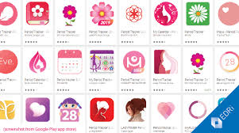

Tracking your period helps you understand your body and predict when your next period will come.
There are many apps and tools available that make it easy and even fun!
Several apps can help track menstruation, with options like Flo Period & Pregnancy Tracker and Clue Period & Cycle Tracker being popular choices.
These apps allow users to log their menstrual cycle, track ovulation, and even monitor pregnancy if needed.
Key Features and Benefits
Cycle Tracking: Apps can help users track the start and end dates of their periods, as well as the duration of their cycle.
Ovulation Prediction: Many apps provide predictions about when ovulation is likely to occur, which can be helpful for those trying to conceive or avoid pregnancy.
Symptom Tracking: Users can log symptoms like cramps, mood swings, and other physical changes that may occur during their cycle.
Personalized Insights: Some apps offer personalized insights based on the data users have entered, helping them understand their individual cycle patterns.
Fertility Planning: Apps can be used for fertility planning, either to increase the chances of conception or to prevent pregnancy.
Popular Apps
Flo Period & Pregnancy Tracker: This app is designed for period tracking, but also includes ovulation and pregnancy tracking features.
Clue Period & Cycle Tracker: Clue is known for its user-friendly interface and in-depth cycle analysis, allowing users to track various aspects of their cycle.
Ovia Fertility & Cycle Tracker: This app focuses on fertility planning and tracking, with features for predicting ovulation and logging health habits.
Femometer: This app combines period and fertility tracking, offering features to help users understand their cycle and predict fertility windows.
My Cycle and Glow Ovulation: Other popular options that offer unique tracking styles and health logs.
Things to Consider
Accuracy: While apps can be helpful, they are not a substitute for medical advice or contraception.
Data Privacy: Be aware of the apps data privacy policies and how your information is being used.
Free vs. Paid Versions: Many apps offer free versions with limited features, while paid versions may provide more advanced tools.

Remember: No two cycles are the same. Find what works best for YOU.